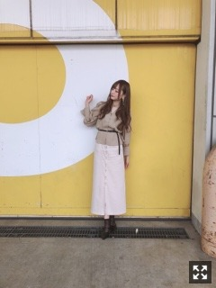

花粉と思われる時々症状が現れます、が、きっと勘違いだと思い込みます
皆様こんにちは！
乃木坂46の
梅澤美波です！
先日の個別握手会！
お越しくださった皆様
ありがとうございました！
名古屋での個別はかなり久しぶりでした
この日はめちゃくちゃ寒くて
来てくださった方もみなさま
手が冷たくて、、
寒い中本当にありがとうございました(；；)
お花もたくさん頂きましたっ！
ありがとう〜
いい香りがするんですよ〜
メッセージもありがとうございます！
1部の私服はこんな感じでした〜

私の選ぶ服は
柄やロゴがあるものが圧倒的に少ないので
アクセサリーで遊ぶのが好きです
大きめのものを選びます
この付けてるのもお気に入りのイヤリング◎
最近専らベージュが好きです
黒ばっかり人間だった梅澤ですが
最近は黒とベージュが並んでたら
ベージュを手に取ることが増えました
春の力でしょうか、
流行りの力でしょうか、、
黒ももちろん好きです、が
明るい色も目を引きます。
あ、でも原色とかパキッとした色は
今もなかなか手を出せずにいますが（笑）
今年はどんな服を着ましょう
空き時間やお休みができれば
何度も何度もお店に足を運びますが
なかなかピン！と来るものに出逢えません。
私のクローゼットは
圧倒的にトップスが少ないのです
買いに行かねば
こんなの着てほしいだとか
リクエストあればお待ちしています◎
最近の休日やお仕事終わりは
先輩方の舞台を観させて頂いたり
気になったものを一人で観にいったり
完全に趣味といいますか
お勉強も兼ねてですが、観劇が好きです◎
朗読劇も初めてこの間観ました〜！
ページが減っていくのが目に見えるのも
すごく新鮮でしたし
言葉だけで浮かんでくる情景に
終始感動しておりました、、
生田さんのロミジュリも
井上さんの愛のレキシアターも
能條さんのHARUTOも、、！
どれも本当に素敵でした(；；)
感想を書きたいとこですが
メールに送ったので長くなってしまいそうなので
やめておきますっ
気になるのを片っ端から観るのが好きで
最近は観劇だらけの日々です〜
楽しい！
そろそろ一人で旅行に行きたいなあ〜
20歳の目標です
でもまだ一人焼肉も
挑戦出来ていないからなあ、、
いつかのスピリッツさんのオフショット。
この衣装好きだったなあ〜
お知らせ◎
▽３／２３ B.L.T. さま
山下久保と表紙巻頭を務めさせて頂きます！新鮮な3人でした！春らしい衣装を用意して下さりピンク一面の表紙になっています！ぜひ！
▽３／２５ OVERTURE さま
掘り下げ企画をさせて頂き、かなり面白く、かっこよく、色んな梅澤が見られるのではないかなぁと思います！ちび梅澤がいたり、あの方からのコメントだったり、、盛りだくさんです！ぜひ読んでいただきたいです！
〜ラジオ
▽毎週月〜木 ニッポン放送 19:56〜20:00 「乃木坂46 梅澤美波の『のぎぼき』！」
〜DVD
▽３／２０ 乃木坂46版 ミュージカル 『美少女戦士セーラームーン』Blu-ray&DVD
本日発売です！
特典映像盛りだくさんです！
わたしも早くみたいなあ
感想教えてください◎
〜テレビ
▽毎週水曜24:59~25:29 日本テレビ系 「ザンビ」
〜イベント
▽３／３０ マイナビpresents 第28回 東京ガールズコレクション2019 SPRING/SUMMER
▽４／２０ TGC KUMAMOTO 2019 by TOKYO GIRLS COLLECTION
TGCに出演させて頂きます、、！！
嬉しいです(；；)
握手会でも行くよって声を聞いて
とても心強いです！楽しみます！
そして昨日は
衛藤さんの卒業ソロコンサート。
アンコールに出演させて頂きました！
裏の楽屋でみんなで
モニターを見ていました！
初めから最後まで、とても綺麗でした。
綺麗な歌声もずっと聴けて
衛藤さんのファンの方にとって
本当に幸せな時間になったんだろうなあって
観ていて思いました。
思い出ファーストも歌ってくださって
嬉しかったなあ〜(；；)
本当にお疲れ様でした。
まだ握手会で会えるので、
残り少ない時間ですが大切に一緒に過ごせたらなと思います！
明日は名古屋にて
全国握手会があります！
握手会は二会場に別れますので
推しに会いに行く際には
皆様お間違いなく！！
公式ホームページに
レーンの詳細がのっています！
私は第一展示館の第4レーンにて
元気いっぱいお待ちしております
ぜひ遊びに来てください待ってます！
ももさん
梅桃でさようなら
おやすみなさい！
Original：https://www.nogizaka46.com/s/n46/diary/detail/49551?ima=4946&cd=MEMBER